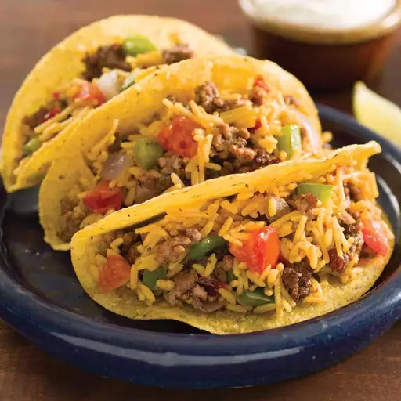

Tacos

Description
Regardless of which day of the week it is, tacos are better than other
foods. This recipe empowers most human beings with the ability to prepare them
for consumption. What more could you want? Rice? This recipe covers rice,
settle down.
Ingredients
- 2 tablespoons I Can't Believe It's Not Butter! Spread, divided
- 1 pound lean ground beef
- salt and ground black pepper to taste (Optional)
- 1 medium green or red bell pepper, chopped
- 1 medium red onion, chopped
- 2 cups water
- 1 (5.4 ounce) package Knorr Fiesta Sides Mexican Rice
- 1 medium tomato, chopped
- 8 taco shells
Steps
- Melt 1 tablespoon butter spread in large nonstick skillet over
medium-high heat. Add ground beef, season with salt and pepper, and
cook until browned and crumbly, 5 to 7 minutes. Transfer to a bowl.
- Melt remaining 1 tablespoon butter spread in same skillet over
medium-high heat. Add bell pepper and onion and cook, stirring occasionally,
until crisp-tender, about 5 minutes.
- Stir in water, rice, and tomato; increase heat to high and bring to a boil.
Reduce heat, cover, and simmer until rice is tender, about 7 minutes. Stir in
beef and cook until heated through.
- Spoon beef and rice mixture into taco shells and serve.